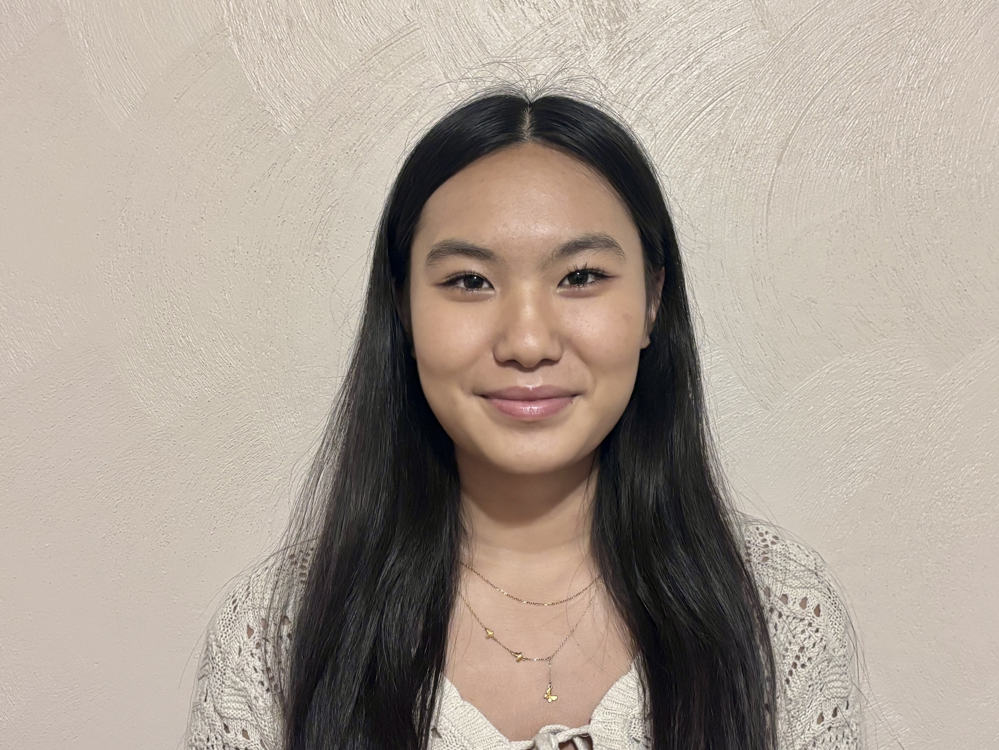

Our Mission
The Hampton Roads Math Club is dedicated to fostering a vibrant and inclusive community of mathematics enthusiasts by inspiring curiosity, creativity, and excellence in mathematical thinking. We seek to cultivate a lifelong appreciation for mathematics through engaging learning experiences, problem-solving activities, competitions, mentorship, and outreach programs.
Our mission is to make high-quality mathematical opportunities accessible to all students, with a special commitment to supporting individuals from underrepresented and underserved communities, including students with disabilities. We strive to remove barriers to participation, promote equity in STEM education, and create a welcoming environment where every student can develop confidence, discover their potential, and pursue their passion for mathematics.
By connecting students, educators, families, and community partners, the Hampton Roads Math Club aims to empower the next generation of innovators, scholars, and leaders while advancing mathematical literacy and opportunity throughout the Hampton Roads region.
Leadership

Elizabeth Gong
Elizabeth Gong is a junior at the Ocean Lakes High School Math and Science Academy in Virginia Beach, Virginia. She is passionate about mathematics, computer science, and scientific research, and has distinguished herself through both academic excellence and leadership. Elizabeth serves as a leader of her school's math team, mentoring fellow students and fostering a collaborative environment for mathematical problem-solving and competition.
Her achievements include qualifying for the American Invitational Mathematics Examination (AIME) and maintaining an outstanding academic record. She was selected to attend Virginia Governor's School programs in mathematics and science and actively participates in advanced STEM activities. Elizabeth is particularly interested in artificial intelligence and its applications and is currently involved in research exploring the use of AI technologies.
Meetings
We meet weekly at the ODU BAL building (Old Dominion University).
Contact us for the current schedule and to get involved.
Contact
Elizabeth Gong